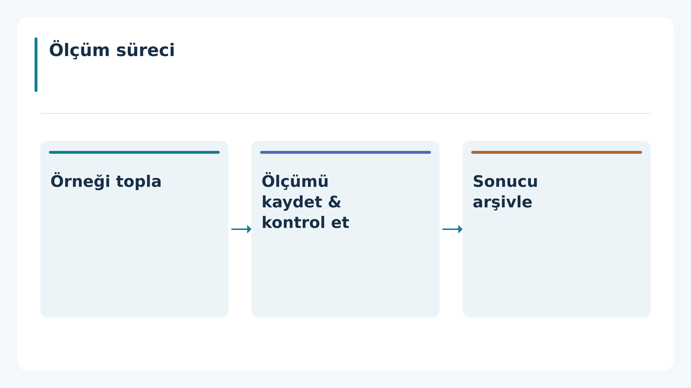
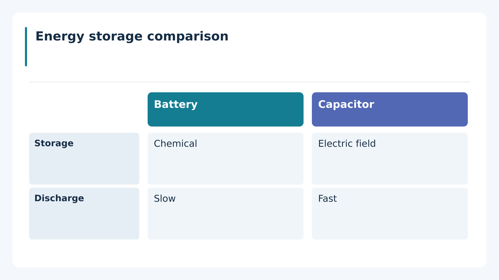
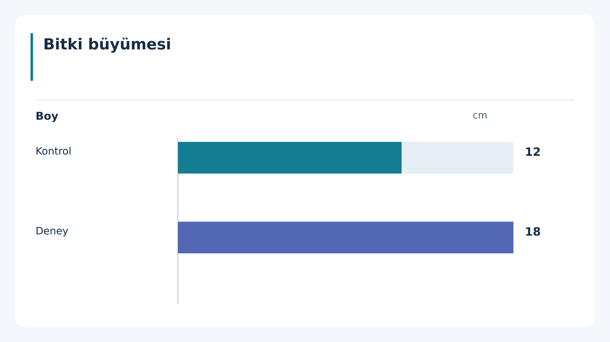
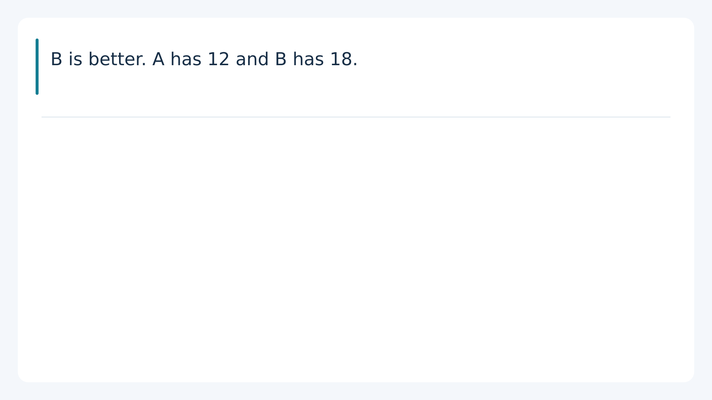
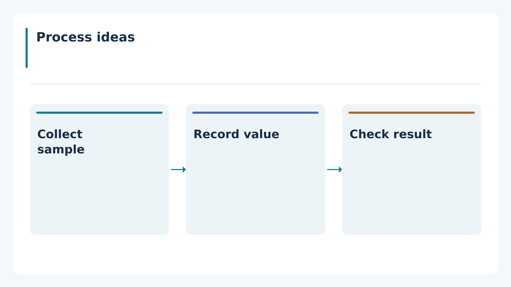

process_tr
flowchart · valid
Explicit source order supports a sequence diagram; arrows assert order only.

comparison_en
comparison · valid
Two concepts have explicit facts for the same source-backed categories.

dataset_tr
chart · valid
Verified labels, values and a common unit support a zero-baseline bar chart.

ambiguous
typography_only · valid
Preserve source meaning without introducing relationships or numerical claims.
missing_units
typography_only · valid
Preserve source meaning without introducing relationships or numerical claims.
contradictory
typography_only · valid
Preserve source meaning without introducing relationships or numerical claims.
bullet_review
typography_only · valid
Preserve source meaning without introducing relationships or numerical claims.

teacher_confirmed
flowchart · valid
Explicit source order supports a sequence diagram; arrows assert order only.